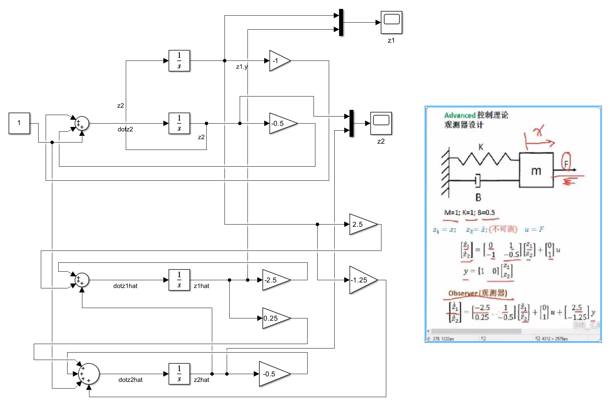
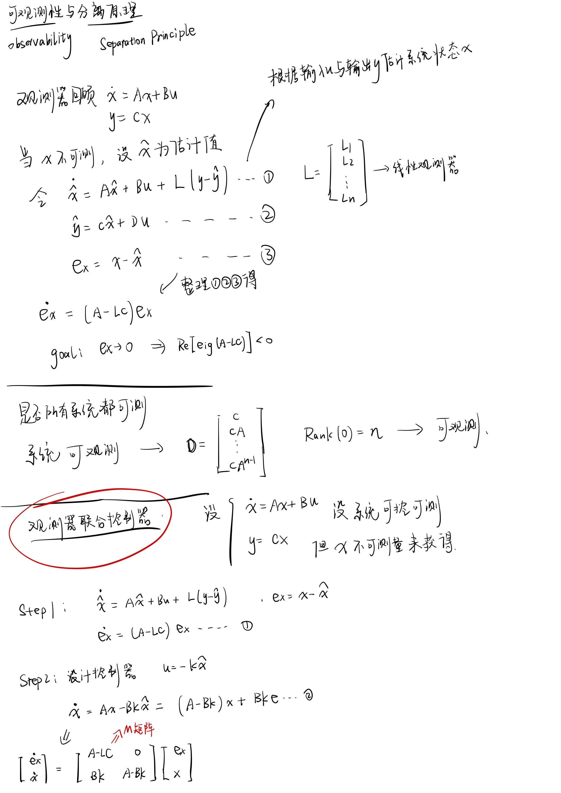
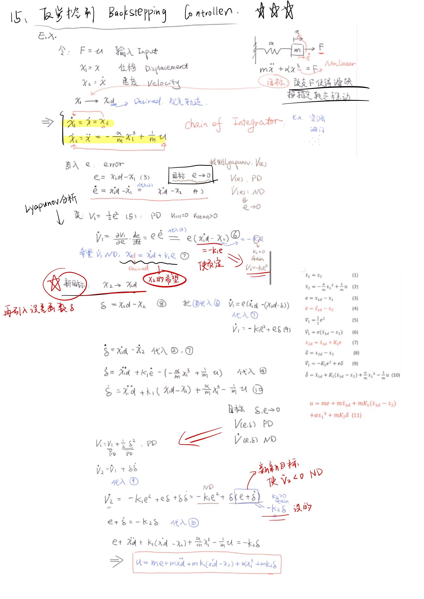

DRCAN-Learn-Blog-Advance
此Blog记录了本人按照DRCAN视频推荐的学习顺序来系统学习DRCAN发表的控制相关视频。博客作为笔记使用。
1-状态空间表达
以一个质量块-弹簧-阻尼器系统来进行分析：
状态空间表达是即为：系统输入输出状态变量的一个集合，用一阶微分方程的形式表达出来。
状态空间表达与传递函数之间的关系：包括转换方程，以及重要结论：|SI-A|矩阵的特征值就是传递函数的极点！
2-状态空间方程的解
有点难以推导且认为推导过程不太重要
3-相图-相轨迹
相轨迹是系统的状态随时间变化的轨迹。当时间变化时，系统的状态点在状态空间中移动，这条移动的轨迹就是相轨迹。
对于一个阻尼摆，系统的能量会逐渐衰减，最终趋于静止。其相轨迹不会形成闭合的曲线，而是一个逐渐收缩的螺旋，最终收敛到平衡点（摆静止的位置）。这说明系统是稳定的，且有能量损失。
可以通过分析导数正负来判别该点的稳定性，后面结论重要一些。
特殊的一种鞍点。在此令了上述x与y的导来确定x的输出？这个有些复杂。应该是用到了线性代数的坐标变换 看不太懂。。看特征值直观点。
对于复数的，而实部为0的特征值。是一个椭圆，Fixed Point为Center。
特征值复数但是实部不为0的时候。
总结上述情况。
3.5-连续系统的离散化
采样频率至少要为原系统频率的两倍，这样才能重建出原信号。否则可能出现混叠现象，不能复现原系统变化趋势。（2倍只是下限理论值，实际工程中选取5-10倍）
Zero Order Hold （ZOH零阶保持器），使得控制量在一个控制周期内保持不变。
采样周期要与数据处理控制时间相匹配。若数据读入处理需要50ms，则小于50ms的采样周期将变得没有意义。
Error ：G(T) = ∫(0,T) exp(Aτ) dτ·B
状态空间的解输出，在离散系统下的表达形式。离散系统下不关心t，而着重与每个周期。系统输入u在一个周期内可以看作一个常数（ZOH的作用）。所以可以提取出来。
使用软件将连续系统转化为离散系统 指令c2d(sys,f)。
4-相图-相轨迹动态系统分析Phase Portrait爱情故事
相轨迹
5-系统的可控性
讲解了对于状态空间表达的秩判据的相关内容。秩判据的相关数学证明:
另外讲解了定义的可控性是何种意义上的可控性。
6-李雅普诺夫稳定性
讲解了李雅普诺夫稳定性的严禁数学定义。以及对于状态转移矩阵A矩阵特征值的几种形式来定义李雅普诺夫的集中稳定性。
针对非线性系统，区别于传统解微分方程，采用李雅普诺夫第二法进行解决，在此处进行了简单的介绍。
7-线性控制器设计
这部分便是之前现代控制理论方面的根据期望的特征值来确定系统的不同k增益的输入。
令u=kx，对期望的$\lambda$列出闭环矩阵Acl，对Acl求特征值?（应该是 太久远了 有点遗忘）
列出以$\lambda$为未知量的方程，结合期望$\lambda$的特征值方程对应相等。求得k矩阵。
8-LQR控制（Liner Quadratic Regulator）
线性二次型调节器。是一种对控制系统的目标$\lambda$进行确定的最优控制算法。
其设置了一种惩罚函数J，通过求得MinJ来确定系统最优的$\lambda$。进而进行线性控制器的设计。
9-状态观测器设计（Luenberger为例）
LQR控制等线性控制u=-kx的前提是状态x全部可测。而对于状态不可测的系统需要观测器Observer
也是之前现代控制理论的必做题类型。观测器建立了一个新的反馈系统目标是使得观测值与实际值相差的err为0。
观测器也就是 根据系统现有的输入和输出 来估计系统的状态。
另外根据之前的阻尼器-弹簧-质量块经典系统进行了观测器设计，设定两个特征值期望为-1 -1。
Simulink仿真

观测器状态空间是目标$\lambda$=-1 -1求解出来的。
Z2状态不可测，直接运行时，估计值与真实值完全重合。
在Z2hat估计值的地方对z2估计值进行赋初值为1的操作时，可以认为z2开始时估计值与真实值有了偏差。
此时，系统的输出图像有了偏差，z1与z2估计值有关，所以两个图像全部出现了偏差。且能够在后续过程中完成跟随观测。
10-可观测性与分离原理

12-非线性理论基础
….介绍了正定 半正定 负定 半负定的各种函数。
此处在设计Lyapunov函数的时候使用到了物理上的能量概念，动能与重力势能相结合搞出来了一个真正的能量函数V(x)
13-不变性原理
对Lyapunov的稳定性判定分了很多的类，抽时间再整理一下。
14-非线性稳定性设计
设计如下的非线性系统。
将三种u的处理方式整合成三个子系统。
1 直接线性化处理。 2 李雅普诺夫直接法设计 3 李雅普诺夫直接法直接消除非ND项。
设定仿真时间10s，x初始值为10；
输出状态变量为右图所示，输入为左图所示。
1黄色线条 直接线性化处理。 2橙色线条 李雅普诺夫直接法设计 3蓝色线条 李雅普诺夫直接法直接消除非ND项。
可以看到直接线性化处理的方式简单粗暴，因为输入存在x的三次方所以导致开始时输入值非常大。这是难以实现的。
对于李雅普诺夫直接法设计的输入以及输出较为合理。
李雅普诺夫分析后直接消除非ND项的做法较直接线性化处理有一定优势，但是稳态效果不好。
15-非线性反步法设计-Important
反步法设计可以说是非线性链式系统的通用设计方法。
如下图，输入可以直接控制X2的状态，但是输入无法直接影响状态X1。

对两个引入的状态进行稳定性分析。
Dr.Can设计的Simulink仿真模型。
对例题进行分析
16-非线性自适应控制器
自认为的自适应控制器简化设计步骤：
自适应控制器是处理a参数未知的情况。通过设计一个估计值，再引入估计误差。
估计误差的导数因为a参数缓慢变化，所以a的导数为0。但是不禁让人思考a变化迅速的时候呢？
对估计误差与原本控制误差进行联合Lyapunov稳定行为分析。设计u使得李函数的导数为ND。
在之前认为a参数已知的反馈线性化的设计过程中，把a换为a的估计值，带入到u中。
处理联合的李函数，通过设计a的估计使得难以负定的项为0。得到a估计的导的Hope值。
此时把a积分，再带回反馈系统线性化设计的u。设计完成。
（貌似这些设计的步骤都是通用的，都类似反步法的设计步骤）
此时联合李函数是NSD的。不能说a估计和e趋近于0，只能说他们是稳定的。
需要引入Lyapunov-like lemma。证明一下。
参考DrCan以及其他学员分享的Simulink设计，设计如下的系统。
Xd改为变化量，a改为变化量。在k等于20的情况下跟踪性能也还行。
k太小不行。k小的时候x根本无法完成跟踪。k必须很大才能很好的跟踪。
但是k太大的话会导致u变得十分的抽象，显然是难以实现u的输出 不符合实际工程的运用。
下图为k为20的跟踪情况，感觉已经非常不错了！
下图为k为20的输入u的情况。可以看到已经有点抽象了，幅度跨度很大。也可能是我这个系统的a变化幅度太大，以及目标值太过苛刻。不知道实际工程中的使用情况是如何的？
课后题：对经典弹簧系统进行非线性自适应控制器的设计
自己做的有点错误
标准答案如下图片
17-非线性鲁棒控制器
鲁棒控制相关可以看山东科技大学的周克敏教授视频：https://space.bilibili.com/615075414
17-1 滑膜控制器
这里滑模控制的形式就是使得
$$
u=ke+\dot{x}_d+\rho \frac{\left| e \right|}{e}
$$
而e的项是一个类似符号函数sgn(e)的东西。
而$\rho$是一个大于fx的绝对值的一个函数。
将u的形式代回到e导中，画出e和e导的状态图相轨迹。可以看到一个面-滑模面，系统状态就在这个面上趋近于0。
部分摘自：滑膜控制的简单理解-知乎
上图右侧是证明过程，在此用到了一个数学手法，对微分方程的不等式的证明，引入了一个松弛变量来变为等式。最终通过微分方程的通解的方式解出李函数在经过放缩，得出李函数小于某值。
接着将李函数反带回这个不等式，直接解出e的状态是小于xx值的，最后得出这个状态e是指数渐进稳定的。这个证明手法确实巧妙。
17-2 其他两种鲁棒控制 高增益/高频
在Drcan的视频中解释鲁棒控制的u通式都是
$$
u=ke+\dot{x}d+u{aux}
$$
其中$u_{aux}$是辅助用的。针对不同的鲁棒控制，仅仅是$u_{aux}$而已不同。
下图给出了其他两种鲁棒控制的$u_{aux}$形式。另外给出了证明过程。都是与滑膜的证明过程相似的过程。可以好好学习一下。
可以简单的理解 高增益控制方式就是使用足够大的输入去抵消不确定性。
而高频的控制方式就是滑膜的一种变式，通过设置参数使得其相较于滑模控制更为平和。
以下是对三种控制方式进行建模分析。对滑膜控制分一个子系统，对其他两种分别不同的参数大小分别设置4个子系统如下图：
运行结果：
首先是四个系统的误差消除情况如下图：
接着是四个系统的输入情况：
分析：
滑膜：输入极为抽象，控制效果中规中矩。
高增益0.1：输入在开始时很大，很抽象，但后续很平滑，收敛速度也最快。
高增益1：都差不多。
高频0.1：都差不多。
高频1：都差不多，收敛效果最差。